Календарь для корпоративного мессенджера
Проблема
После ухода Microsoft Teams клиенты начали использовать сторонние сервисы, что создавало риски корпоративных данных.
Клиенты
Функциональность принесла таких клиентов как Rencons, Атлас Майнинг и другие
Что я сделала
Анализ рынка
Изучила решения Microsoft Teams, Slack, VK Teams и других корпоративных платформ. Сформировала Job Story чтобы понять контекст.

Большинство продуктов связывало календарь с ВКС и используют разные подходы реализации. Обсудила с командой анализ и сформировала гипотезы для проверки.
Гипотеза 1
Реализовать календарь отдельным разделом
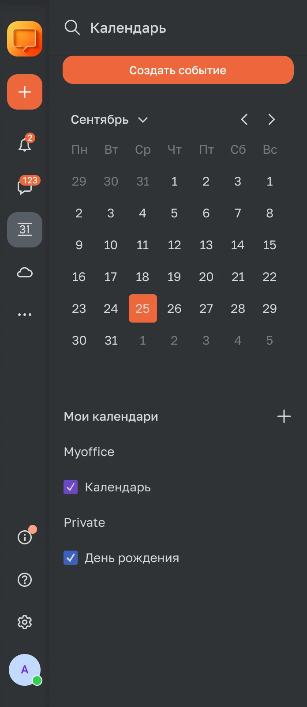
- +Плюс: Одна сущность, без усложнения функционала
- +Плюс: Легкая разработка, не надо будет переделывать конференции
- +Плюс: Понятно, где искать прошедшие конференции
- +Плюс: Возможность масштабировать под полноценный календарь, без привязки к старым функциям
- −Минус: Непонятно, где искать записанные встречи — в конференциях или прошедшем событии? (гипотеза)
- −Минус: Придется поддерживать раздел «конференции» и постоянно синхронизировать сценарии с календарём.
- −Минус: Дополнительная сущность в списке разделов. Неочевидна ценность разделения для пользователя.
Гипотеза 2
Календарь внутри существующего раздела «Конференции»
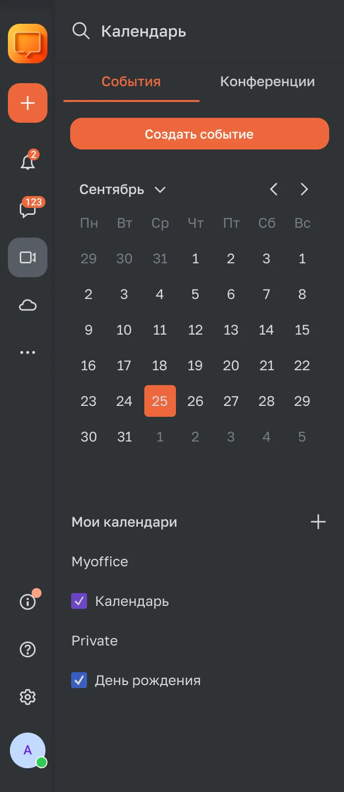
- +Плюс: Сокращаем сценарии использования конференций и событий
- +Плюс: Понятно, где искать записанные встречи
- +Плюс: Все функции конференций и событий в одном месте
- +Плюс: Не расширяем пространство правой навигации
- +Плюс: Прячем малоиспользуемые функции
- −Минус: Соединяем сущности, которые имеют разное представление информации (отличается лайаут и дизайн)
- −Минус: В задачу войдёт переработка конференций, что может занять дополнительное время у разработки.
Исследование
Цель исследования:
- понять привычки работы с календарями;
- определить ожидаемое место расположения календаря;
- выявить ключевые пользовательские сценарии.
Результаты исследования


194
респондента
35%
не используют вкладку «Конференции»
Вводная информация
- Только 11% опрошенных используют вкладку конференций каждый день.
- В основном используют для просмотра записанных встреч 93 респондента, поиска прошедших событий 50 респондентов, 37 респондентов просматривают историю сообщений. В другом респонденты указали, что чаще всего подключаются к текущим встречам.
- Некоторые респонденты отметили, что не обращали внимание на существование кнопки до этого момента. И не понимают зачем нужна эта вкладка.
- Прошедшие события в календаре ищут нечасто. В среднем несколько раз в месяц и реже. События обычно разбросаны по месяцу. В целом, большинство респондентов имеют сложности с поиском нужного события в календаре.
- Некоторые респонденты выразили желание увидеть вкладку с конференциями на текущий день или получать оповещения о предстоящих встречах. Также были высказаны пожелания добавить кнопку запроса доступа к записи и возможность запланировать конференцию прямо из списка и добавить в календарь.
- В Microsoft Team нет вкладки конференции. Все действия с событиями проходит внутри календаря. Также, там отсутствует история конференций.
Вывод
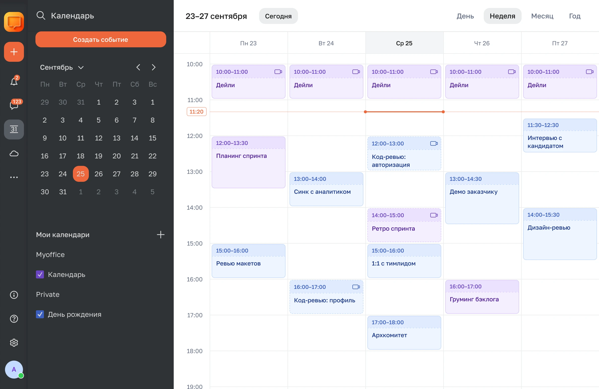
Что дальше
Вместе с аналитиком, разработчиком и тестировщиком построили User Story Mapping, чтобы понять границы задачи.

Решение
Было принято решение сделать два варианта отображения событий: недельная сетка и сетка на день.
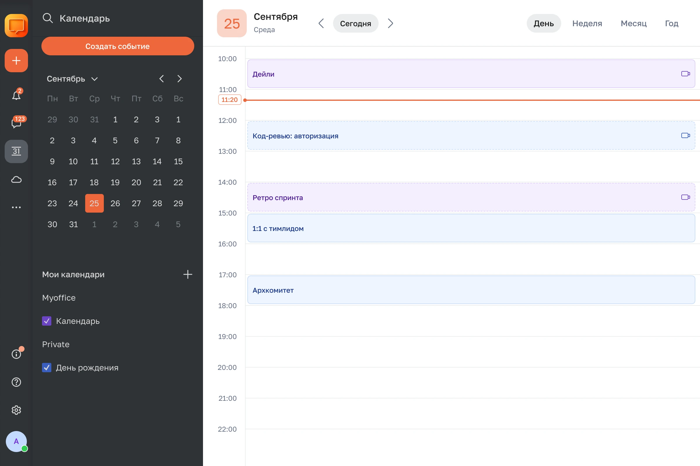
Навигация
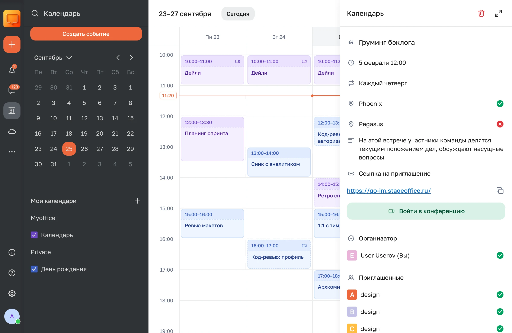
Добавление календаря
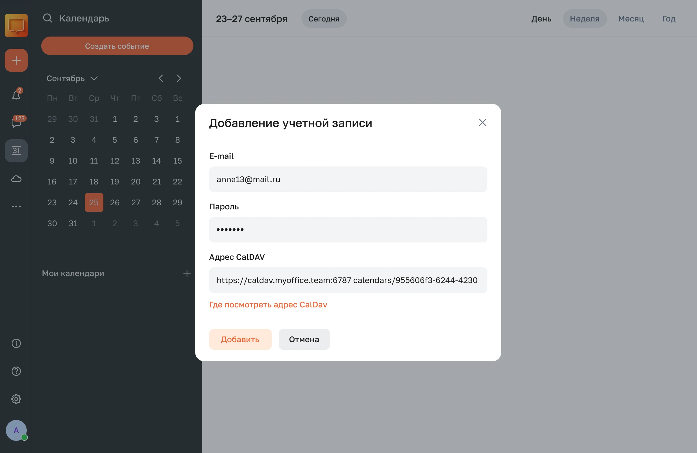
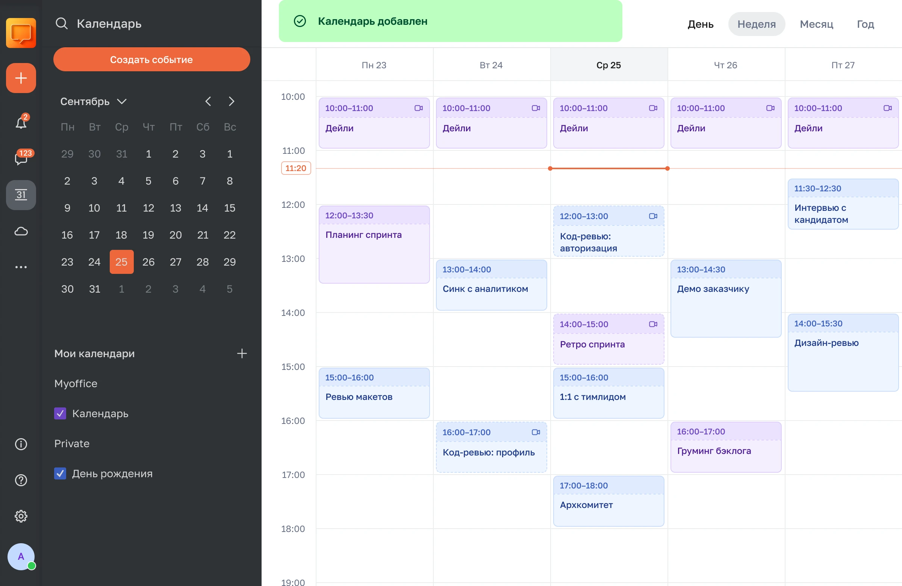
Создание события
Событие можно создать кнопкой «Создать событие» или нажатием на свободную ячейку в сетке.
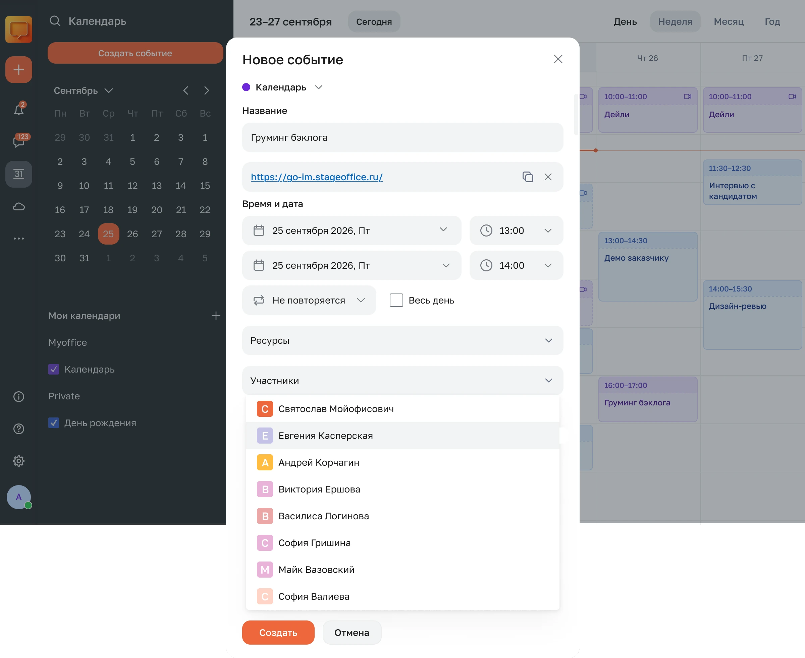
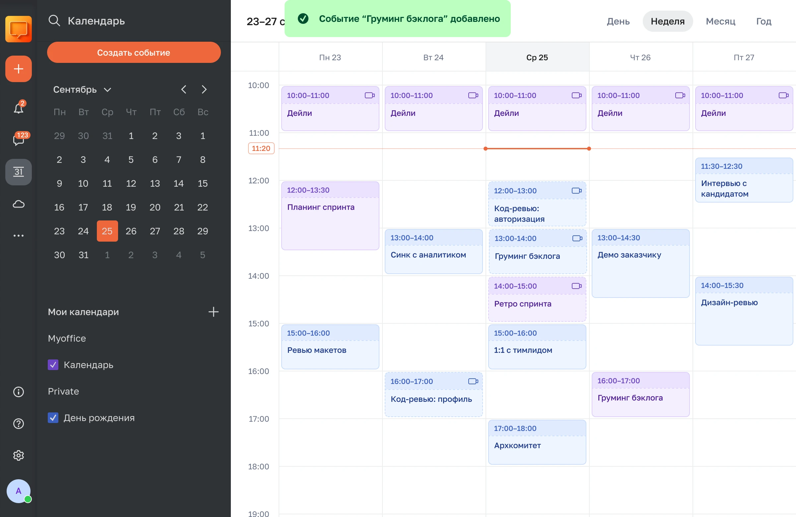
Элементы интерфейса
Дата и время
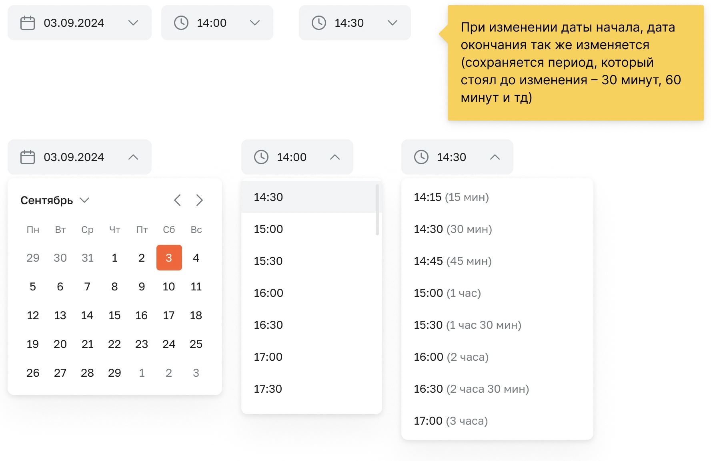
Повторы
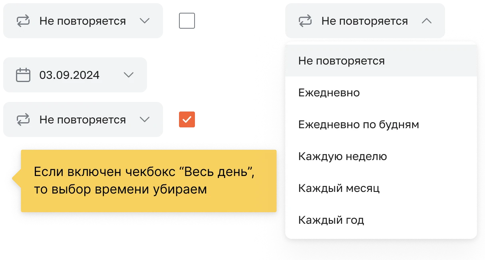
Статусы занятости
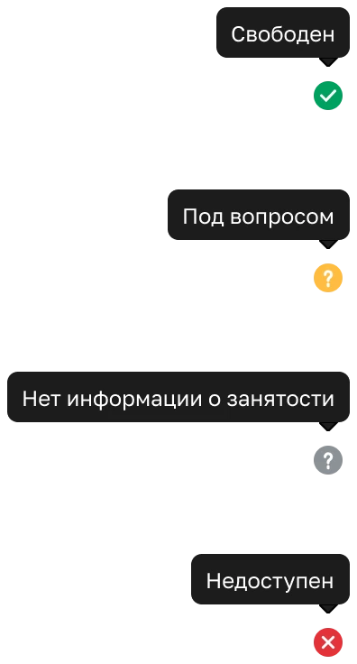
Участники и ресурсы
Календарь
Ошибки


Результат
- Помог сделать из мессенджера Squadus Pro и стать заменой Microsoft Teams.
- Закрыли несколько сделок с B2B-компаниями.
Концепт приложения для чтения книг «Lu»
Следующий кейс →